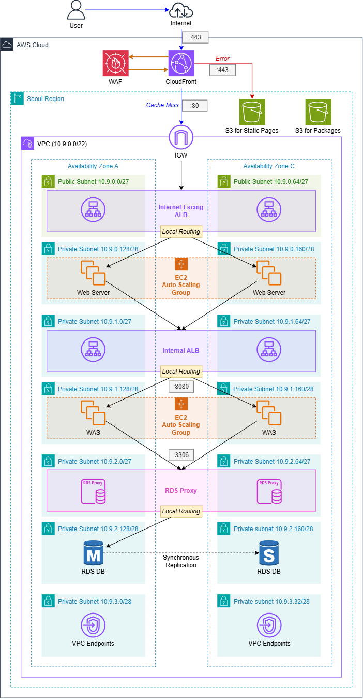

NAT 게이트웨이 없는 AWS 3계층 구성과 절차서 기반 구축
AI 서비스 운영을 위한 클라우드 데이터 엔지니어 과정 중간 프로젝트
프로젝트 기간: 2026. 9. 21. ~ 2026. 10. 14. (13일)
2026. 10. 14. (수)
동물병원 300개 지점을 24시간 운영하는 펫 클리닉이, 병원 직원용 홈페이지(PetClinic)의 인프라를 AWS에 구축해 달라고 의뢰했다.
| 요구 사항 | 설계에 반영한 것 |
|---|---|
| 서버 하나가 고장 나도 2분 안에 정상 서비스 | AZ 두 곳에 분산, ALB 상태 확인으로 고장 서버 제외, Auto Scaling이 교체 |
| AZ에 장애 발생 시 | 임시로 다른 AZ 하나만 사용 (영역 이동) |
| 앱 업데이트 중에도 서비스 중단 없음 | 새 AMI로 인스턴스 새로 고침, 신규 인스턴스를 먼저 기동한 뒤 교체 |
| 동시 사용자 600명 | 인스턴스 사양 결정, k6 부하 시험으로 확인 |
| 고객 정보 저장 시 암호화, 백업 | RDS 저장 암호화, DB 구간 TLS, 자동 백업 7일 |
| 병원 양식의 오류 페이지 | CloudFront 사용자 지정 오류 응답과 S3 |
| Apache, Tomcat, OpenJDK 기반 | Apache 2.4, Tomcat 9, Amazon Corretto 8 (OpenJDK 배포판) |
| 사용자 규모 확대 (미확정) | WAS 2~4대 자동 조정, AZ B와 D의 주소 대역 예약 |

사용자 → CloudFront (+ WAF) → 외부 ALB → Apache → 내부 ALB → Tomcat → RDS Proxy → RDS MySQL
| 계층 | 구성 |
|---|---|
| 웹 서버 | Apache, t4g.micro, Auto Scaling 그룹 |
| WAS | Tomcat 9 + Java 8, t4g.small, 2~4대 자동 조정 |
| DB 서버 | MySQL 8.4 Multi-AZ, db.t4g.small, RDS Proxy |
그림은 가독성을 위해 EC2를 서브넷 안에 표현했다. 서브넷, 보안 그룹, IP 주소가 붙는 대상은 EC2의 네트워크 인터페이스다.
| 이름 | 주 담당 | 부 담당 |
|---|---|---|
| 김태준 (팀장) | 작업 기반 | PM |
| 김건형 | WAS | DB 서버 |
| 김승환 | PM | 웹 서버 |
| 양진현 | 웹 서버 | 작업 기반 |
| 우수빈 | DB 서버 | WAS |
발표는 주 담당 영역을 맡는다. 교차 수행 검토로 모두가 한 번씩은 절차서에 따라 인프라를 구축해 보았다.
개발용 VPC에서 검증하고 운영용 VPC에 적용
pet-shared-) 자원과 개발용 자원으로 먼저 생성한다.pet-prod-) 자원을 절차서대로 생성한다.목적 → 선행 조건 → 절차 → 유의 사항. 모든 단계가 기대 결과로 완료되어서, 누가 수행해도 동일한 결과가 나오는지 검증이 가능하다.
| 일자 | 수행 내용 |
|---|---|
| 9. 21. | 킥오프, 기존 애플리케이션 분석 |
| 9. 22. ~ 9. 30. | 개발용 VPC 구축과 테스트 (추석 연휴 제외) |
| 10. 1. ~ 10. 8. | 운영용 VPC 구축, 테스트 설계와 검증 |
| 10. 9. ~ 10. 11. | 교차 수행과 절차서 보완 (연휴) |
| 10. 12. ~ 10. 14. | 발표 자료 준비, 최종 발표 |
| 용도 | 도구 |
|---|---|
| 인프라 관리 | AWS 콘솔, CloudShell, Systems Manager |
| 개발과 실행 | IntelliJ IDEA, JDK, Tomcat, MySQL |
| 협업 | Jira, Notion, GitHub |
| 시험과 문서화 | k6, Quarto |
NAT 게이트웨이 대신 엔드포인트
| 출구 방식 | 월 고정 요금 (USD) |
|---|---|
| NAT 게이트웨이 1개 | 46.72 |
| AZ마다 NAT 게이트웨이 (권장 구성) | 93.44 |
| 인터페이스 엔드포인트 6개 (선택) | 56.94 |
인스턴스 유형: Graviton (t4g)
| 유형 | 시간당 (USD) |
|---|---|
| t3.micro / t4g.micro | 0.013 / 0.0104 |
| t3.small / t4g.small | 0.026 / 0.0208 |
서울 리전, 730시간 기준
VPC 10.9.0.0/22, 서브넷 14개
| 용도 | AZ A | AZ C | 크기 이유 |
|---|---|---|---|
| 외부 ALB | .0.0/27 | .0.64/27 | ALB는 /27 이상 |
| 웹 | .0.128/28 | .0.160/28 | 인스턴스만 |
| 내부 ALB | .1.0/27 | .1.64/27 | ALB는 /27 이상 |
| WAS | .1.128/28 | .1.160/28 | 인스턴스만 |
| RDS Proxy | .2.0/27 | .2.64/27 | 여유 IP 10개 필요 |
| DB | .2.128/28 | .2.160/28 | |
| 엔드포인트 | .3.0/28 | .3.32/28 |
NAT 게이트웨이를 제외하면 서버가 호출하는 AWS 서비스마다 엔드포인트와 정책이 필요하다. 하나라도 누락되면 해당 기능만 오류 표시 없이 중단된다.
버전 호환성
취약점 보완
petId 사용, 보호자와 반려동물 관계 검증 적용Arm 기반 배포
t4g.small 적용설정 외부화
setenv.sh에서 Parameter Store의 DB 접속 주소와 Secret ARN 조회가용성과 자동 확장
모니터링과 알림
HealthyHostCount가 2 미만이면 CloudWatch 경보와 SNS 이메일 알림whoami.jsp에서 AWS API로 조회한 대상 그룹 상태와 현재 요청 경로 시각화안정적인 DB 운영을 위해 가용성과 연결 안정성을 중점적으로 고려했다.
RDS for MySQL 8.4
db.t4g.small / gp3 20 GiB
RDS Proxy
계정
| 계정 | 용도 | 자격 증명 관리 |
|---|---|---|
마스터 cloud9 |
DB 관리 | RDS 관리형 Secret |
앱 cloud9-pet |
PetClinic | Secrets Manager |
petclinic DB의 필요한 권한만 부여적재
RDS Proxy와 Secrets Manager를 연동하는 과정에서 IAM 권한과 보안 그룹 설정이 DB 연결에 미치는 영향을 직접 확인하며, 보안과 접근 제어의 중요성을 체감했다.
<VirtualHost *:80>
ProxyAddHeaders On
ProxyPreserveHost On
RewriteEngine On
# /petclinic 으로 오면 /petclinic/ 으로 301
RewriteRule ^/petclinic$ https://%{HTTP_HOST}/petclinic/ [R=301,L]
# ttl=55: ALB 유휴 제한(60초)보다 먼저 닫는다
# addressttl=30: ALB IP가 바뀌어도 30초 안에 다시 조회
ProxyPass "/petclinic/" "http://<INTERNAL_ALB_DNS>/petclinic/" ttl=55 addressttl=30
ProxyPassReverse "/petclinic/" "http://<INTERNAL_ALB_DNS>/petclinic/"
</VirtualHost>/petclinic/만 WAS로 넘기고, 나머지는 Apache가 직접 응답httpd_can_network_connect 허용CloudFront (정액 요금제 Free)
/pet_*, OAC)외부 ALB에 CloudFront만 닿게
접두사 목록은 다른 사람의 CloudFront 배포도 통과시킨다. 비밀 헤더가 우리 배포만 골라낸다.
시험 방법
시험 결과
| 항목 | 값 |
|---|---|
| 가상 사용자 수 | 600명 |
| 초당 요청 | 63건 |
| p95 응답 시간 | 0.11초 |
| 오류율 | 0% |
| WAS 확장 여부 | 2대 유지 (평균 CPU 70% 미만) |
배운 점
남은 과제
시연 영상 자리. PDF에는 시연 화면 캡처를 넣는다.
Cloud 9: 김태준(팀장), 김건형, 김승환, 양진현, 우수빈
보충 설명용 슬라이드
| 항목 | 이 설계의 수량 | 월 금액 (USD) |
|---|---|---|
| RDS DB 인스턴스 (MySQL, Multi-AZ) | db.t4g.small 1대 |
74.46 |
| 인터페이스 VPC 엔드포인트 | 엔드포인트와 AZ 조합 6개 | 56.94 |
| EC2 인스턴스 | 웹 micro 2대, WAS small 2대 | 45.55 |
| ALB | 2개, 각 1 LCU로 가정 | 44.53 |
| RDS Proxy | DB 인스턴스 vCPU 2개 | 26.28 |
| 외부 ALB 공인 IPv4 주소 | 2개로 추정 | 7.30 |
| RDS 스토리지 (gp3, Multi-AZ) | 20 GB | 5.24 |
| EBS 루트 볼륨 (gp3) | 8 GB × 4 | 2.92 |
| Secrets Manager | 비밀 2개 | 0.80 |
| S3 버킷 (오류 페이지, 패키지) | 2개, 합계 1 GB로 가정 | 0.03 |
| 합계 | 약 264.05 |
| 연결 구간 | 송신 측 (기본값) | 수신 측 (기본값) | 조정 방향 |
|---|---|---|---|
| CloudFront → 외부 ALB | keep-alive 5초 | ALB 유휴 60초 | 기본값 그대로 안전 |
| 외부 ALB → Apache | ALB 유휴 60초 | KeepAliveTimeout 5초 |
수신 측을 60초 초과로 |
| Apache → 내부 ALB | mod_proxy ttl |
ALB 유휴 60초 | ttl을 60초 미만으로 (ttl=55) |
| 내부 ALB → Tomcat | ALB 유휴 60초 | keepAliveTimeout 20초 |
수신 측을 60초 초과로 |
| Tomcat → RDS Proxy | 커넥션 풀 유휴 연결 | 유휴 클라이언트 연결 1,800초 | 풀을 1,800초 미만으로 |
한 연결의 양단에서 수신 측의 유휴 시간을 송신 측보다 길게 설정한다. 수신 측이 먼저 연결을 종료하면 이미 종료된 연결로 요청이 전송되어 ALB가 502를 반환한다.
응답 대기 상한은 CloudFront 30초, ALB 60초다. 그러므로 40초가 소요되는 조회는 CloudFront가 먼저 연결을 종료한다. GET과 HEAD는 재시도하고, POST는 재시도하지 않는다.
| 구성 | 복구 시간 (RTO)에 관련된 사실 | 데이터 손실 (RPO)에 관련된 사실 |
|---|---|---|
| Multi-AZ DB 인스턴스 (현재) | 장애 조치 보통 60~120초. RDS Proxy가 최대 66% 줄인다. | 다른 AZ의 대기 인스턴스로 동기 복제 |
| Multi-AZ DB 클러스터 | 보통 35초 미만 | 읽기 인스턴스 하나 이상이 확인해야 커밋 |
| Aurora | 복제본 승격 보통 60초 미만 | 저장 노드 6개에 AZ를 넘어 동기 복제 |
| 자동 백업에서 특정 시점 복구 | 문서에 수치 없음 | 트랜잭션 로그를 5분마다 S3에 올림. 보존 0~35일 |
측정한 값
WAS 서버 하나가 고장 나면
| 항목 | Free | Pro | Business | Premium |
|---|---|---|---|---|
| 월 요금 (USD) | 0 | 15 | 200 | 1,000부터 |
| 월 요청 허용량 | 100만 건 | 1,000만 건 | 1억 2,500만 건 | 5억 건 |
| 월 전송 허용량 | 100 GB | 50 TB | 50 TB | 50 TB |
| VPC 안의 프라이빗 오리진 | 미지원 | 미지원 | 지원 | 지원 |
| WAF 규칙 수 | 5 | 25 | 50 | 75 |
| IP 기반 속도 제한 | 지원 | 지원 | 지원 | 지원 |
| 봇 관리 | 미지원 | 미지원 | 지원 | 지원 |
| 가용성 SLA | 미지원 | 미지원 | 지원 | 지원 |
Free를 선택했다. VPC 오리진은 Business 이상이 필요하므로, internet-facing ALB를 CloudFront 접두사 목록과 비밀 헤더로 이중 차단했다.
© 2026 Cloud 9펫 클리닉 3계층 아키텍처 인프라 구축